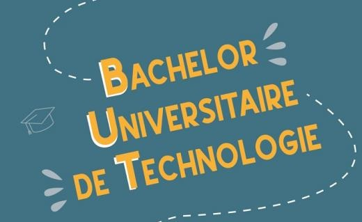
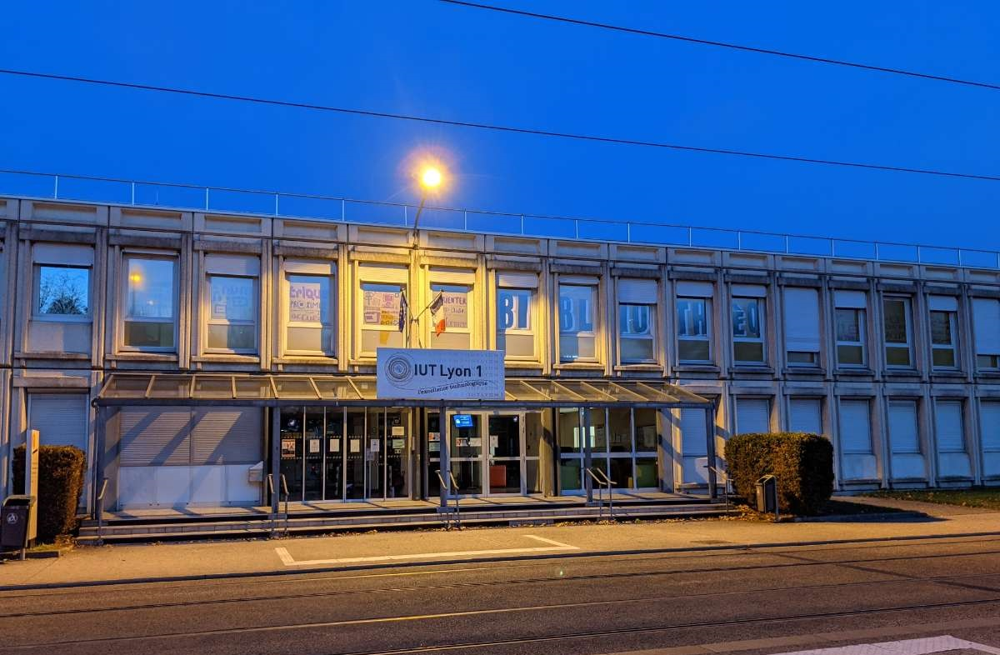

Le BUT c'est quoi ?
Le BUT qui signifie Bachelor Universitaire de Technologie et remplace depuis la rentrée 2021 la formation nommée DUT Diplome Universitaire de Technologie. C'est une formation qui ce réalise en trois ans en IUT (Institut Universitaire de Technologie), et qui permet une spécialisation au troisième semestre dans un des domaines que comprends la formation. Et c'est en troisième année que la formation s'effectue ogligatoirement en alternance. Cette formation délivre un diplome équivalent à la licence tout en proposant plus de pratique. Il existe 24 types de cette formation, dont le BUT Informatique!
Voir plus

Le BUT informatique c'est quoi ?
Cette formation prépare aux métiers du numérique et qui est composé à la fois de cours pratique et théorique. De plus elle vise à acquerir des compétences sur de nombreux sujets comme le réseaux ou les langages de programmation ...
Au troisième semestre cette formation propose quatre parcours :
- parcours réalisation d'applications : conception, développement, validation
- parcours administration, gestion et exploitation des données
- parcours déploiement, intégration d'applications et management du système d'information
- parcours déploiement d'applications communicantes et sécurisées
Voir plus

L'IUT informatique à la Doua
La doua propose trois des quatres parcours de la formation :
- parcours réalisation d'applications : conception, développement, validation
- parcours administration, gestion et exploitation des données
- parcours déploiement d'applications communicantes et sécurisées
Voir plus